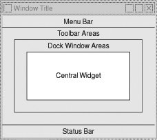

Subclassing QMainWindowAn application's main window is created by subclassing QMainWindow. Many of the techniques we saw in Chapter 2 for creating dialogs are also relevant for creating main windows, since both QDialog and QMainWindow inherit from QWidget. Main windows can be created using Qt Designer, but in this chapter we will do everything in code to demonstrate how it's done. If you prefer the more visual approach, see the "Creating Main Windows in Qt Designer" chapter in Qt Designer's online manual. The source code for the Spreadsheet application's main window is spread across mainwindow.h and mainwindow.cpp. Let's start with the header file:
#ifndef MAINWINDOW_H
#define MAINWINDOW_H
#include <QMainWindow>
class QAction;
class QLabel;
class FindDialog;
class Spreadsheet;
class MainWindow : public QMainWindow
{
Q_OBJECT
public:
MainWindow();
protected:
void closeEvent(QCloseEvent *event);
We define the class MainWindow as a subclass of QMainWindow. It contains the Q_OBJECT macro since it provides its own signals and slots. The closeEvent() function is a virtual function in QWidget that is automatically called when the user closes the window. It is reimplemented in MainWindow so that we can ask the user the standard question "Do you want to save your changes?" and to save user preferences to disk.
private slots:
void newFile();
void open();
bool save();
bool saveAs();
void find();
void goToCell();
void sort();
void about();
Some menu options, like File|New and Help|About, are implemented as private slots in MainWindow. Most slots have void as their return value, but save() and saveAs() return a bool. The return value is ignored when a slot is executed in response to a signal, but when we call a slot as a function the return value is available to us just as it is when we call any ordinary C++ function.
void openRecentFile();
void updateStatusBar();
void spreadsheetModified();
private:
void createActions();
void createMenus();
void createContextMenu();
void createToolBars();
void createStatusBar();
void readSettings();
void writeSettings();
bool okToContinue();
bool loadFile(const QString &fileName);
bool saveFile(const QString &fileName);
void setCurrentFile(const QString &fileName);
void updateRecentFileActions();
QString strippedName(const QString &fullFileName);
The main window needs some more private slots and several private functions to support the user interface.
Spreadsheet *spreadsheet;
FindDialog *findDialog;
QLabel *locationLabel;
QLabel *formulaLabel;
QStringList recentFiles;
QString curFile;
enum { MaxRecentFiles = 5 };
QAction *recentFileActions[MaxRecentFiles];
QAction *separatorAction;
QMenu *fileMenu;
QMenu *editMenu;
...
QToolBar *fileToolBar;
QToolBar *editToolBar;
QAction *newAction;
QAction *openAction;
...
QAction *aboutQtAction;
};
#endif
In addition to its private slots and private functions, MainWindow also has lots of private variables. All of these will be explained as we use them. We will now review the implementation: #include <QtGui> #include "finddialog.h" #include "gotocelldialog.h" #include "mainwindow.h" #include "sortdialog.h" #include "spreadsheet.h" We include the <QtGui> header file, which contains the definition of all the Qt classes used in our subclass. We also include some custom header files, notably finddialog.h, gotocelldialog.h, and sortdialog.h from Chapter 2.
MainWindow::MainWindow()
{
spreadsheet = new Spreadsheet;
setCentralWidget(spreadsheet);
createActions();
createMenus();
createContextMenu();
createToolBars();
createStatusBar();
readSettings();
findDialog = 0;
setWindowIcon(QIcon(":/images/icon.png"));
setCurrentFile("");
}
In the constructor, we begin by creating a Spreadsheet widget and setting it to be the main window's central widget. The central widget occupies the middle of the main window (see Figure 3.2). The Spreadsheet class is a QTableWidget subclass with some spreadsheet capabilities, such as support for spreadsheet formulas. We will implement it in Chapter 4. Figure 3.2. QMainWindow's areas We call the private functions createActions(), createMenus(), createContext-Menu(), createToolBars(), and createStatusBar() to set up the rest of the main window. We also call the private function readSettings() to read the application's stored settings. We initialize the findDialog pointer to be a null pointer; the first time MainWindow::find() is called, we will create the FindDialog object. At the end of the constructor, we set the window's icon to icon.png, a PNG file. Qt supports many image formats, including BMP, GIF,[*] JPEG, PNG, PNM, XBM, and XPM. Calling QWidget::setWindowIcon() sets the icon shown in the top-left corner of the window. Unfortunately, there is no platform-independent way of setting the application icon that appears on the desktop. Platform-specific procedures are explained at http://doc.trolltech.com/4.1/appicon.html.
GUI applications generally use many images. There are several methods for providing images to the application. The most common are:
Here we use Qt's resource mechanism because it is more convenient than loading files at run-time, and it works with any supported image file format. We have chosen to store the images in the source tree in a subdirectory called images. To make use of Qt's resource system, we must create a resource file and add a line to the .pro file that identifies the resource file. In this example, we have called the resource file spreadsheet.qrc, so we put the following line in the .pro file: RESOURCES = spreadsheet.qrc The resource file itself uses a simple XML format. Here's an extract from the one we have used:
<!DOCTYPE RCC><RCC version="1.0">
<qresource>
<file>images/icon.png</file>
...
<file>images/gotocell.png</file>
</qresource>
</RCC>
Resource files are compiled into the application's executable, so they can't get lost. When we refer to resources, we use the path prefix :/ (colon slash), which is why the icon is specified as :/images/icon.png. Resources can be any kind of file (not just images), and we can use them in most places where Qt expects a file name. They are covered in more detail in Chapter 12. |